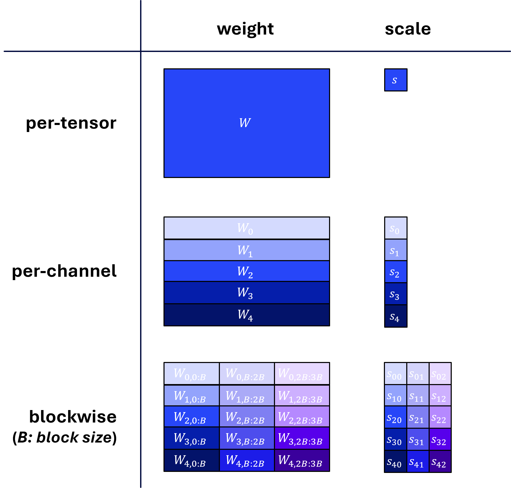

Blockwise Quantization¶
Note
This section explains the general concept and usage of blockwise quantization. However, generic blockwise quantization is not yet supported by Qualcomm hardware. For a practical alternative of blockwise quantization supported by Qualcomm hardware, see Low-Power Blockwise Quantization (LPBQ)
Blockwise quantization, also known as per-block quantization, is a quantization scheme that divides the input into multiple small blocks, with each block sharing the same quantization scale. Due to its finer granularity, blockwise quantization offers improved model accuracy compared to per-tensor or per-channel quantization.

Executing blockwise quantization¶
To enable blockwise quantization, instantiate a QuantizeDequantize object with blockwise settings and replace an existing quantizer with the new quantizer.
Specify the block sizes for each dimension of the tensor in the block_size parameter. Note the relationship between block_size arguments and the QuantizeDequantize object’s shape, and with the shape of the tensor being quantized.
The following rules apply:
If block_size is provided, the length of block_size must match the length of the QuantizeDequantize object’s shape.
If block_size is provided, it must be no longer than the number of dimensions of the tensor.
Block sizes must evenly divide each of the tensor’s dimensions. For example, if a tensor’s shape is (2, 2, 6, 10), then (2, 1, 3, 5) is a valid block_size, since each tensor dimension is divisible by the corresponding block size.
In formal terms, for block_size [b1, b2,, …, bn,] and QuantizeDequantize shape [s1, s2,, …, sn,], the tensor’s shape must satisfy this relationship:
\[tensor.shape\left[:-n\right] == \left[b_1 * s_1, b_2 * s_2, ..., b_n * s_n\right]\]For any dimension, you can use a block size value of -1 to instruct the quantizer to automatically determine the block size based on shape of the QuantizeDequantize object and the tensor in that dimension.
Following are examples of valid and invalid combinations of tensor shape, QuantizeDequantize shape, and block_size.
# Invalid combination: block_size is not the same length as QuantizeDequantize shape
tensor shape: (1, 4, 10)
QuantizeDequantize shape: (1,)
block_size: (1, 4, 10)
# Invalid combination: block_size * QuantizeDequantize shape != tensor shape:
tensor shape: (1, 4, 10)
QuantizeDequantize shape: (1, 2, 10)
block_size: (1, 2, 5)
# Valid combination:
tensor shape: (16, 64, 3, 3)
QuantizeDequantize shape: (16, 4, 1, 1)
block_size: (1, 16, 3, 3)
# Valid combination (note that though tensor shape is 3d, only the final 2 dimensions correspond to block_size
# and QuantizeDequantize shape):
tensor shape: (2, 4, 10)
QuantizeDequantize shape: (2, 2)
block_size: (2, 5)
# Valid combination:
tensor shape: (2, 4, 10)
QuantizeDequantize shape: (2, 2)
block_size: (-1, -1) # block_size will be inferred to be (2, 5)
Not supported
To allow for experimentation, the QuantizeDequantize object supports arbitrary block sizes. However, the Qualcomm runtime imposes the following restrictions:
Blockwise quantization runs on weight (not activation) quantizers only.
Block size must be set to one for the output channel dimension.
Block size may take an arbitrary value for the input channel dimension (it must still divide evenly into the input channel tensor shape).
Block size must be equal to the tensor size for all other dimensions.
Layers running with blockwise-quantized weights must be running with quantized floating-point activations.
The following code examples show how to configure convolution and linear layers to blockwise quantization.
from aimet_torch.quantization.affine import QuantizeDequantize
# Assume sim.model.conv_1 refers to a QuantizedConv2d layer with weight param shape of (16, 64, 2, 2)
# Below settings equate to a block size of 16 in the input channels dimension.
sim.model.conv_1.param_quantizers['weight'] = QuantizeDequantize(shape=(16, 4, 1, 1),
bitwidth=4,
symmetric=True,
block_size=(1, 16, 2, 2)) # (-1, -1, -1, -1) works too
# Assume sim.model.linear_1 refers to a QuantizedLinear layer with weight param shape of (12, 16)
# Below settings equate to a block size of 4 in the input channels dimension.
sim.model.conv_1.param_quantizers['weight'] = QuantizeDequantize(shape=(12, 4),
bitwidth=4,
symmetric=True,
block_size=(1, 4)) # (-1, -1) works too
Note
Not supported in aimet-onnx.
API¶
As described above, the Qualcomm runtime is constrained to running floating point activations for layers that use blockwise quantization. We provide the following utility function to help transform multiple layers’ quantizers to float quantization:
- aimet_torch.v2.quantsim.config_utils.set_activation_quantizers_to_float(sim, arg, exponent_bits=None, mantissa_bits=None, dtype=None)[source]
Set activation quantizers of modules to float.
- Overloads:
sim (
QuantizationSimModel), module_type (List[Type[Module]]), exponent_bits (int) =None, mantissa_bits (int) =None, dtype (dtype) =Nonesim (
QuantizationSimModel), qmodules (List[Module]), exponent_bits (int) =None, mantissa_bits (int) =None, dtype (dtype) =Nonesim (
QuantizationSimModel), condition (Callable[[Module],bool]), exponent_bits (int) =None, mantissa_bits (int) =None, dtype (dtype) =None
- Parameters:
sim (
QuantizationSimModel) – Quantsim to set activation quantizers forarg –
Argument determining which modules to set. This can consist of either:
A list of torch.nn.Module types, in which case all modules whose type is in the list will be set
A list of torch.nn.Modules, in which case all modules in the list will be set
A callable function which takes a torch.nn.Module as input and returns True if the module is to be set, False otherwise
exponent_bits (
int) – Number of exponent bits to simulatemantissa_bits (
int) – Number of mantissa bits to simulatedtype (
dtype) – torch.dtype to simulate. This argument is mutually exclusive with exponent_bits and mantissa_bits.
Examples
>>> # Assume 'sim' is a QuantizationSimModel object imported from aimet_torch.quantsim >>> # Allows setting of all Linear and Conv output quantizers to floating point activation quantization: >>> set_activation_quantizers_to_float(sim=sim, ... arg=[torch.nn.Linear, torch.nn.Conv2d], ... dtype=torch.float16) >>> # Allows setting of specific model layers' output quantizers to floating point activation quantization: >>> set_activation_quantizers_to_float(sim=sim, ... arg=[sim.model.conv2, sim.model.linear1], ... dtype=torch.float16) >>> # Allows setting of only Convolution layers with input channels dim == 128 to floating point activation quantization: >>> set_activation_quantizers_to_float(sim=sim, ... arg=lambda module: isinstance(module, torch.nn.Conv2d) and module.weight.shape[1] == 128, ... dtype=torch.float16)
- aimet_torch.v2.quantsim.config_utils.set_blockwise_quantization_for_weights(sim, arg, bitwidth, symmetric, block_size)[source]
Set weight parameter quantizers of modules to blockwise.
- Overloads:
sim (
QuantizationSimModel), module_type (List[Type[Module]]), bitwidth (int), symmetric (bool), block_size (Union[int,Tuple[int,...]])sim (
QuantizationSimModel), qmodules (List[Module]), bitwidth (int), symmetric (bool), block_size (Union[int,Tuple[int,...]])sim (
QuantizationSimModel), condition (Callable[[Module],bool]), bitwidth (int), symmetric (bool), block_size (Union[int,Tuple[int,...]])
- Parameters:
sim (
QuantizationSimModel) – Quantsim to set weight quantizers forarg –
Argument determining which modules to set. This can consist of either:
A list of torch.nn.Module types, in which case all modules whose type is in the list will be set
A list of torch.nn.Modules, in which case all modules in the list will be set
A callable function which takes a torch.nn.Module as input and returns True if the module is to be set, False otherwise
bitwidth (
int) – Bitwidth for affine quantizationsymmetric (
bool) – True if affine quantization is symmetric, False otherwiseblock_size (
Union[int,Tuple[int,...]]) –Block size for affine quantization. This can be an array in which case all layers identified by arg must have weight shapes compatible with the array length, or can be an integer value, in which case the block size will be applied to the weight’s in_channels dimension, and per channel will be used for the weight’s out_channels dimension.
A block size value of -1 for a particular dimension is equivalent to a block size equal to the size of that particular dimension.
Examples
>>> # Assume 'sim' is a QuantizationSimModel object imported from aimet_torch.quantsim >>> # Allows setting of all Linear and Conv weight quantizers to block_size 64 in the input_channels dimension: >>> set_blockwise_quantization_for_weights(sim=sim, ... arg=[torch.nn.Linear, torch.nn.Conv2d], ... bitwidth=4, ... symmetric=True, ... block_size=64) >>> # Allows setting of specific model layers' weight quantizer block_size to 64 in the input_channels dimension: >>> set_blockwise_quantization_for_weights(sim=sim, ... arg=[sim.model.conv2, sim.model.linear1], ... bitwidth=4, ... symmetric=True, ... block_size=64) >>> # Allows setting of only Convolution layers with input channels dim == 128 to block_size 64 in the input_channels dimension >>> set_blockwise_quantization_for_weights(sim=sim, ... arg=lambda module: isinstance(module, torch.nn.Conv2d) and module.weight.shape[1] == 128, ... bitwidth=4, ... symmetric=True, ... block_size=64)
Note the second argument in the function, which specifies a subset of layers to switch to blockwise quantization. Refer to the function docstring for the valid input types for this argument.
The block_size argument can be a single integer value instead of an array. In this case, the output channels dimension is set to a block size of one, the input channels dimension to the supplied value, and all other dimensions to the dimension’s size.
This enables you to handle layers with differing weight shapes (such as convolution layers with 4d weights vs. linear layers with 2d weights) with a single API call. If an array for block_size is passed instead, the API has to be called multiple times for each set of layers with different weight dimensions (because the length of the block_size array must match the number of dimensions for its layer’s weight).